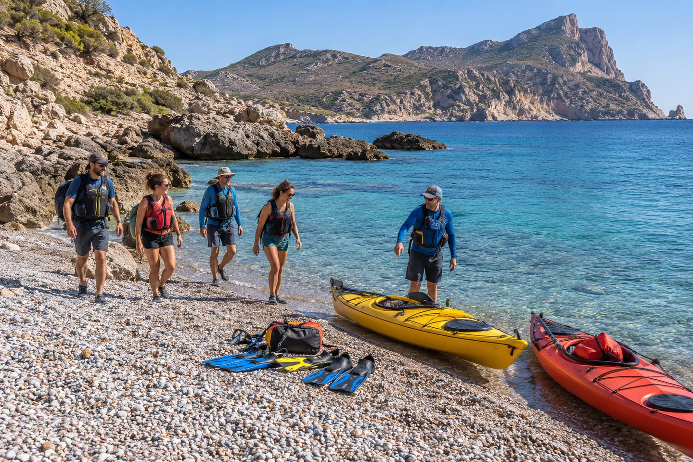

JornadasHorizonte Salvaje
Senderismo costero · kayak · snorkel
Un recorrido por la costa de Águilas a pie y desde el agua, con pausas para conocer el paisaje.
Plan y requisitos
Saber nadar para el tramo acuático. Recorrido adaptado al estado del mar.
Criterios de seguridad